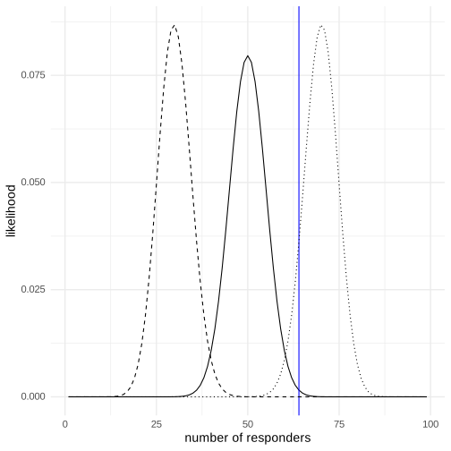
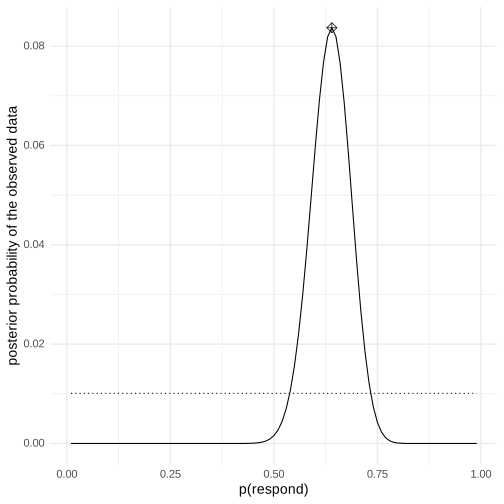
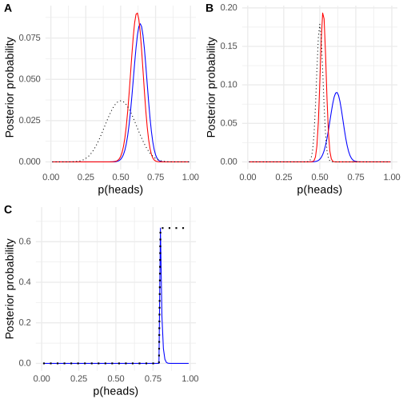
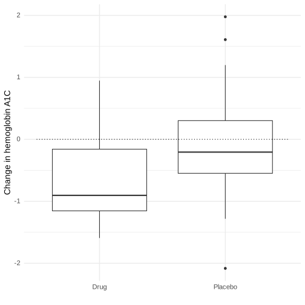
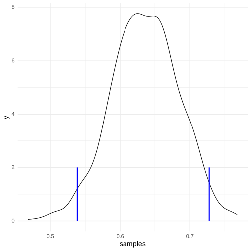

Chapter 11: Bayesian statistics
Contents
Chapter 11: Bayesian statistics#
library(tidyverse)
library(ggplot2)
library(cowplot)
library(boot)
library(MASS)
library(BayesFactor)
library(knitr)
theme_set(theme_minimal(base_size = 14))
set.seed(123456) # set random seed to exactly replicate results
# load the NHANES data library
library(NHANES)
# drop duplicated IDs within the NHANES dataset
NHANES <-
NHANES %>%
dplyr::distinct(ID, .keep_all = TRUE)
NHANES_adult <-
NHANES %>%
drop_na(Weight) %>%
subset(Age >= 18)
── Attaching packages ─────────────────────────────────────────────────────────────────────────────────────────────────────────────────────────────── tidyverse 1.3.2 ──
✔ ggplot2 3.4.1 ✔ purrr 1.0.1
✔ tibble 3.1.8 ✔ dplyr 1.1.0
✔ tidyr 1.3.0 ✔ stringr 1.5.0
✔ readr 2.1.4 ✔ forcats 1.0.0
── Conflicts ────────────────────────────────────────────────────────────────────────────────────────────────────────────────────────────────── tidyverse_conflicts() ──
✖ dplyr::filter() masks stats::filter()
✖ dplyr::lag() masks stats::lag()
Attaching package: ‘MASS’
The following object is masked from ‘package:dplyr’:
select
Loading required package: coda
Loading required package: Matrix
Attaching package: ‘Matrix’
The following objects are masked from ‘package:tidyr’:
expand, pack, unpack
************
Welcome to BayesFactor 0.9.12-4.4. If you have questions, please contact Richard Morey (richarddmorey@gmail.com).
Type BFManual() to open the manual.
************
Doing Bayesian estimation#
bayes_df = data.frame(prior=NA,
likelihood=NA,
marginal_likelihood=NA,
posterior=NA)
bayes_df$prior <- 1/1000000
nTests <- 3
nPositives <- 3
sensitivity <- 0.99
specificity <- 0.99
bayes_df$likelihood <- dbinom(nPositives, nTests, 0.99)
bayes_df$marginal_likelihood <-
dbinom(
x = nPositives,
size = nTests,
prob = sensitivity
) * bayes_df$prior +
dbinom(
x = nPositives,
size = nTests,
prob = 1 - specificity
) *
(1 - bayes_df$prior)
bayes_df$posterior <- (bayes_df$likelihood * bayes_df$prior) / bayes_df$marginal_likelihood
Figure 11.2#
# create a table with results
nResponders <- 64
nTested <- 100
drugDf <- tibble(
outcome = c("improved", "not improved"),
number = c(nResponders, nTested - nResponders)
)
likeDf <-
tibble(resp = seq(1,99,1)) %>%
mutate(
presp=resp/100,
likelihood5 = dbinom(resp,100,.5),
likelihood7 = dbinom(resp,100,.7),
likelihood3 = dbinom(resp,100,.3)
)
ggplot(likeDf,aes(resp,likelihood5)) +
geom_line() +
xlab('number of responders') + ylab('likelihood') +
geom_vline(xintercept = drugDf$number[1],color='blue') +
geom_line(aes(resp,likelihood7),linetype='dotted') +
geom_line(aes(resp,likelihood3),linetype='dashed')

Figure 11.3#
# compute marginal likelihood
likeDf <-
likeDf %>%
mutate(uniform_prior = array(1 / n()))
# multiply each likelihood by prior and add them up
marginal_likelihood <-
sum(
dbinom(
x = nResponders, # the number who responded to the drug
size = 100, # the number tested
likeDf$presp # the likelihood of each response
) * likeDf$uniform_prior
)
# Create data for use in figure
bayesDf <-
tibble(
steps = seq(from = 0.01, to = 0.99, by = 0.01)
) %>%
mutate(
likelihoods = dbinom(
x = nResponders,
size = 100,
prob = steps
),
priors = dunif(steps) / length(steps),
posteriors = (likelihoods * priors) / marginal_likelihood
)
# compute MAP estimate
MAP_estimate <-
bayesDf %>%
arrange(desc(posteriors)) %>%
slice(1) %>%
pull(steps)
# compute likelihoods for the observed data under all values of p(heads). here we use the quantized values from .01 to .99 in steps of 0.01
ggplot(bayesDf,aes(steps,posteriors)) +
geom_line() +
geom_line(aes(steps,priors),color='black',linetype='dotted') +
xlab('p(respond)') + ylab('posterior probability of the observed data') +
annotate(
"point",
x = MAP_estimate,
y = max(bayesDf$posteriors), shape=9,
size = 3
)

Figure 11.4#
# compute likelihoods for data under all values of p(heads)
# using a flat or empirical prior.
# here we use the quantized values from .01 to .99 in steps of 0.01
df <-
tibble(
steps = seq(from = 0.01, to = 0.99, by = 0.01)
) %>%
mutate(
likelihoods = dbinom(nResponders, 100, steps),
priors_flat = dunif(steps) / sum(dunif(steps)),
priors_empirical = dbinom(10, 20, steps) / sum(dbinom(10, 20, steps))
)
marginal_likelihood_flat <-
sum(dbinom(nResponders, 100, df$steps) * df$priors_flat)
marginal_likelihood_empirical <-
sum(dbinom(nResponders, 100, df$steps) * df$priors_empirical)
df <-
df %>%
mutate(
posteriors_flat =
(likelihoods * priors_flat) / marginal_likelihood_flat,
posteriors_empirical =
(likelihoods * priors_empirical) / marginal_likelihood_empirical
)
p1 <- ggplot(df, aes(steps, posteriors_flat)) +
geom_line(color = "blue") +
xlab("p(heads)") + ylab("Posterior probability") +
geom_line(aes(steps, posteriors_empirical), color = "red") +
geom_line(aes(steps, priors_empirical), linetype = "dotted")
# compute likelihoods for data under all values of p(heads) using strong prior.
df <-
df %>%
mutate(
priors_strong = dbinom(250, 500, steps) / sum(dbinom(250, 500, steps))
)
marginal_likelihood_strong <-
sum(dbinom(nResponders, 100, df$steps) * df$priors_strong)
df <-
df %>%
mutate(
posteriors_strongprior = (likelihoods * priors_strong) / marginal_likelihood_strong
)
p2 <- ggplot(df,aes(steps,posteriors_empirical)) +
geom_line(color='blue') +
xlab('p(heads)') + ylab('Posterior probability') +
geom_line(aes(steps,posteriors_strongprior),color='red') +
geom_line(aes(steps,priors_strong),linetype='dotted')
# compute likelihoods for data under all values of p(respond) using absolute prior.
df <-
df %>%
mutate(
priors_absolute = array(data = 0, dim = length(steps)),
priors_absolute = if_else(
steps >= 0.8,
1, priors_absolute
),
priors_absolute = priors_absolute / sum(priors_absolute)
)
marginal_likelihood_absolute <-
sum(dbinom(nResponders, 100, df$steps) * df$priors_absolute)
df <-
df %>%
mutate(
posteriors_absolute =
(likelihoods * priors_absolute) / marginal_likelihood_absolute
)
p3 <- ggplot(df,aes(steps,posteriors_absolute)) +
geom_line(color='blue') +
xlab('p(heads)') +
ylab('Posterior probability') +
ylim(0,max(df$posteriors_absolute)*1.1) +
geom_line(aes(steps,
priors_absolute*max(posteriors_absolute)*20),
linetype='dotted',
linewidth=1)
plot_grid(p1, p2,p3, labels='AUTO')

Figure 11.5#
# create simulated data for drug trial example
set.seed(1234567)
nsubs <- 40
effect_size <- 0.6
# randomize indiviuals to drug (1) or placebo (0)
drugDf <-
tibble(
group = as.integer(runif(nsubs) > 0.5)
) %>%
mutate(
hbchange = rnorm(nsubs) - group * effect_size
)
drugDf %>%
mutate(
group = as.factor(
recode(
group,
"1" = "Drug",
"0" = "Placebo"
)
)
) %>%
ggplot(aes(group, hbchange)) +
geom_boxplot() +
annotate("segment", x = 0.5, xend = 2.5, y = 0, yend = 0, linetype = "dotted") +
labs(
x = "",
y = "Change in hemoglobin A1C"
)

T-test for drug example#
# compute t-test for drug example
drugTT <- t.test(hbchange ~ group, alternative = "greater", data = drugDf)
print(drugTT)
Welch Two Sample t-test
data: hbchange by group
t = 2.0813, df = 32.091, p-value = 0.02273
alternative hypothesis: true difference in means between group 0 and group 1 is greater than 0
95 percent confidence interval:
0.1057051 Inf
sample estimates:
mean in group 0 mean in group 1
-0.08248954 -0.65013353
Bayes factor for drug example#
# compute Bayes factor for drug data
bf_drug <- ttestBF(
formula = hbchange ~ group, data = drugDf,
nullInterval = c(0, Inf)
)
bf_drug
Warning message:
“data coerced from tibble to data frame”
Bayes factor analysis
--------------
[1] Alt., r=0.707 0<d<Inf : 3.369297 ±0%
[2] Alt., r=0.707 !(0<d<Inf) : 0.115034 ±0.01%
Against denominator:
Null, mu1-mu2 = 0
---
Bayes factor type: BFindepSample, JZS
Bayes factor for one-sided tests#
bf_drug[1]/bf_drug[2]
Bayes factor analysis
--------------
[1] Alt., r=0.707 0<d<Inf : 29.28958 ±0.01%
Against denominator:
Alternative, r = 0.707106781186548, mu =/= 0 !(0<d<Inf)
---
Bayes factor type: BFindepSample, JZS
Table 11.2#
# Compute credible intervals for example
nsamples <- 100000
# create random uniform variates for x and y
x <- runif(nsamples)
y <- runif(nsamples)
# create f(x)
fx <- dbinom(x = nResponders, size = 100, prob = x)
# accept samples where y < f(x)
accept <- which(y < fx)
accepted_samples <- x[accept]
credible_interval <- quantile(x = accepted_samples,
probs = c(0.025, 0.975))
kable(credible_interval, caption='Credible interval obtained for the pain drug example using rejection sampling.')
Table: Credible interval obtained for the pain drug example using rejection sampling.
| | x|
|:-----|---------:|
|2.5% | 0.5385021|
|97.5% | 0.7275576|
Figure 11.6#
# plot histogram
p=ggplot(data.frame(samples=accepted_samples),aes(samples)) +
geom_density()
for (i in 1:2) {
p = p + annotate('segment',x=credible_interval[i],xend=credible_interval[i],
y=0,yend=2,col='blue',lwd=1)
}
print(p)
